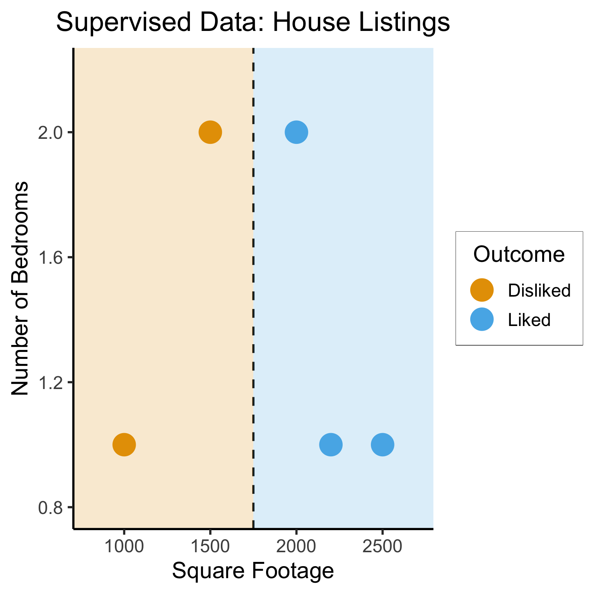
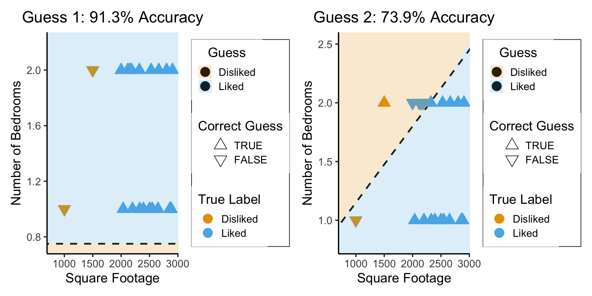
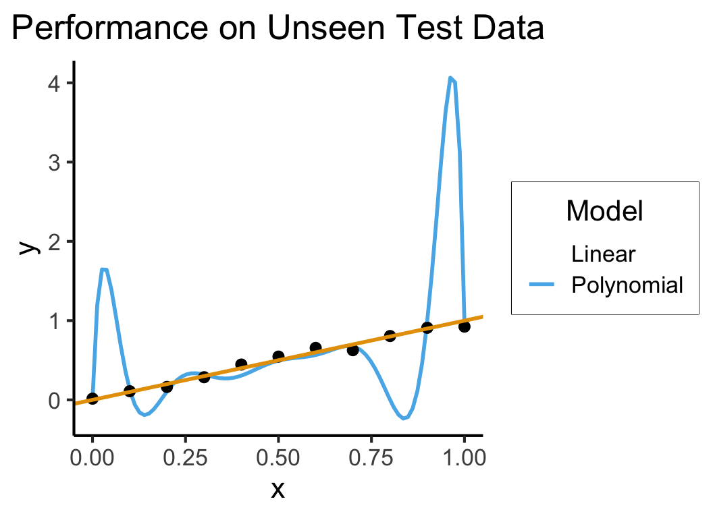
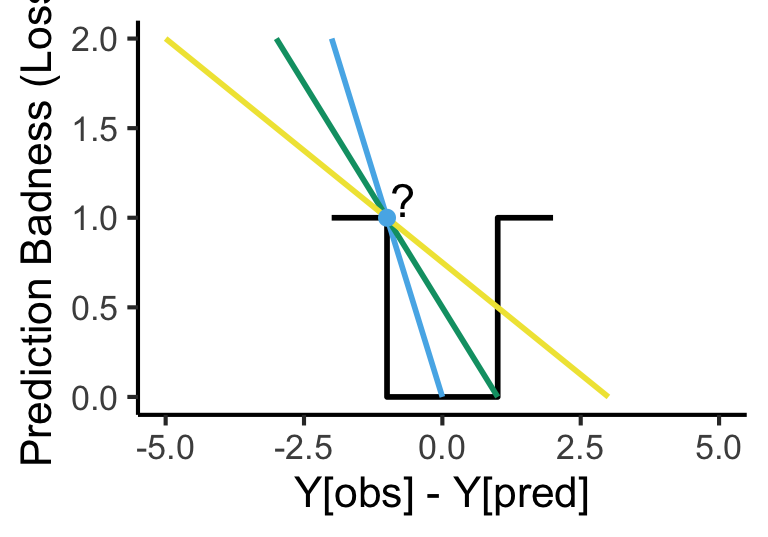

| home_id | sqft | bedrooms | rating |
|---|---|---|---|
| 0 | 1000 | 1 | Disliked |
| 1 | 2000 | 2 | Liked |
| 2 | 2500 | 1 | Liked |
| 3 | 1500 | 2 | Disliked |
| 4 | 2200 | 1 | Liked |
Extra Slides: A Slightly Deeper Dive Into Machine Learning
DSAN5000: Data Science and Analytics
(Addendum to Week 07)
Jeff Jacobs
2025-01-22
Supervised vs. Unsupervised Learning
Supervised Learning: You want the computer to learn the existing pattern of how you are classifying1 observations
- Discovering the relationship between properties of data and outcomes
- Example (Binary Classification): I look at homes on Zillow, saving those I like to folder A and don’t like to folder B
- Example (Regression): I assign a rating of 0-100 to each home
- In both cases: I ask the computer to learn my schema (how I classify)
Unsupervised Learning: You want the computer to find patterns in a dataset, without any prior classification info
- Typically: grouping or clustering observations based on shared properties
- Example (Clustering): I save all the used car listings I can find, and ask the computer to “find a pattern” in this data, by clustering similar cars together
Dataset Structures
Supervised Learning: Dataset has both explanatory variables (“features”) and response variables (“labels”)
Unsupervised Learning: Dataset has only explanatory variables (“features”)
| home_id | sqft | bedrooms |
|---|---|---|
| 0 | 1000 | 1 |
| 1 | 2000 | 2 |
| 2 | 2500 | 1 |
| 3 | 1500 | 2 |
| 4 | 2200 | 1 |
Dataset Structures: Visualized


Different Goals


The “Learning” in Machine Learning
- Given these datasets, how do we learn the patterns?
- Naïve idea: Try random lines (each forming a decision boundary), pick “best” one
- What parameters are we choosing when we draw a random line? Random curve?
What Makes a “Good”/“Best” Guess?
- What’s your intuition? How about accuracy… 🤔
So… what’s wrong here?
What’s Wrong with Accuracy?
The (Oversimplified) Big Picture
- A model: some representation of something in the world
How well does our model represent the world?1 \(\mathsf{Correspondence}(y_{obs}, \theta)\)
\(P\left(y_{obs}, \theta\right)\), \(P\left(\theta \; | \; y_{obs}\right)\), \(P\left(y_{obs} \; | \; \theta\right)\)2
Maximum Likelihood Estimation?
\[ \begin{align*} \mathsf{Correspondence}(y_{obs}, \theta) &\equiv P(y = y_{obs}, \theta) \\ P(y = y_{obs}, \theta) &= P(y=y_{obs} \; | \; \theta)P(\theta) \\ &\propto P\left(y = y_{obs} \; | \; \theta\right)\ldots \implies \text{(maximize this!)} \\ \end{align*} \]
Measuring Errors: F1 Score
- How can we reward guesses which best discriminate between classes?
\[ \begin{align*} \mathsf{Precision} &= \frac{\# \text{true positives}}{\# \text{predicted positive}} = \frac{tp}{tp+fp} \\[1.5em] \mathsf{Recall} &= \frac{\# \text{true positives}}{\# \text{positives in data}} = \frac{tp}{tp+fn} \\[1.5em] F_1 &= 2\frac{\mathsf{Precision} \cdot \mathsf{Recall}}{\mathsf{Precision} + \mathsf{Recall}} = \mathsf{HMean}(\mathsf{Precision}, \mathsf{Recall}) \end{align*} \]
- Think about: How does this address/fix issue with accuracy?
Measuring Errors: The Loss Function
- What about regression?
- No longer just “true prediction good, false prediction bad”
- We have to quantify how bad the guess is! Then we can scale the penalty accordingly: \(\text{penalty} \propto \text{badness}\)
- Enter Loss Functions! Just distances (using distance metrics you’ve already seen) between the true value and our guess:
- Squared Error \(L^2(y_{obs}, y_{pred}) = (y_{obs} - y_{pred})^2\)
- Kullback-Leibler Divergence if guessing distributions
Calculus Rears its Ugly Head
- Neural networks use derivatives/gradients to improve their predictions given a particular loss function.


- Can we just use the \(F_1\) score?
\[ \frac{\partial F_1(weights)}{\partial weights} = \ldots \; ? \; \ldots 💀 \]
Quantifying Discrete Loss
- We can quantify a differentiable discrete loss by asking the algorithm how confident it is
- Closer to 0 \(\implies\) more confident that the true label is 0
- Closer to 1 \(\implies\) more confident that the true label is 1
\[ \mathcal{L}_{CE}(y_{pred}, y_{obs}) = -(y_{obs}\log(y_{pred}) + (1-y_{obs})\log(1-y_{pred})) \]

Loss Function \(\implies\) Ready to Learn!
Once we’ve chosen a loss function, the learning algorithm has what it needs to proceed with the actual learning
Notation: Bundle all the model’s parameters together into \(\theta\)
The goal: \[ \min_{\theta} \mathcal{L}(y_{obs}, y_{pred}(\theta)) \]
What would this look like for the random-lines approach?
Is there a more efficient way?
Calculus Strikes Again
- tldr: The slope of a function tells us how to get to a minimum (why a minimum rather than the minimum?)
- Derivative (gradient) = “direction of sharpest decrease”
- Think of hill climbing! Let \(\ell_t \in L\) be your location at time \(t\), and \(Alt(\ell)\) be the altitude at a location \(\ell\)
- Gradient descent for \(\ell^* = \max_{\ell \in L} Alt(\ell)\): \[ \ell_{t+1} = \ell_t + \gamma\nabla Alt(\ell_t),\ t\geq 0. \]
- While top of mountain = good, Loss is bad: we want to find the bottom of the “loss crater”
- \(\implies\) we do the opposite: subtract \(\gamma\nabla Alt(\ell_t)\)
Good and Bad News
- Universal Approximation Theorem
- Neural networks can represent any function mapping one Euclidean space to another
- (Neural Turing Machines:)

- Weierstrass Approximation Theorem
- (Polynomials could already represent any function)
\[ f \in C([a,b],[a,b]) \] \[ \implies \forall \epsilon > 0, \exists p \in \mathbb{R}[x] : \] \[ \forall x \in [a, b] \; \left|f(x) − p(x)\right| < \epsilon \]
- Implications for machine learning?
So What’s the Issue?
Generalization
- Training Accuracy: How well does it fit the data we can see?
- Test Accuracy: How well does it generalize to future data?
How to Avoid Overfitting?
- The gist: penalize model complexity
Original optimization: \[ \theta^* = \underset{\theta}{\operatorname{argmin}} \mathcal{L}(y_{obs}, y_{pred}(\theta)) \]
New optimization: \[ \theta^* = \underset{\theta}{\operatorname{argmin}} \left[ \mathcal{L}(y_{obs}, y_{pred}(\theta)) + \mathsf{Complexity}(\theta) \right] \]
- So how do we measure, and penalize, “complexity”?
Regularization: Measuring and Penalizing Complexity
- In the case of polynomials, fairly simple complexity measure: degree of polynomial
\[ \mathsf{Complexity}(y_{pred} = \beta_0 + \beta_1 x + \beta_2 x^2 + \beta_3 x^3) > \mathsf{Complexity}(y_{pred} = \beta_0 + \beta_1 x) \]
- In general machine learning, however, we might not be working with polynomials
- In neural networks, for example, we sometimes toss in millions of features and ask the algorithm to “just figure it out”
- The gist, in the general case, is thus: try to “amplify” the most important features and shrink the rest, so that
\[ \mathsf{Complexity} \propto \frac{|\text{AmplifiedFeatures}|}{|\text{ShrunkFeatures}|} \]
LASSO and Elastic Net Regularization
- Many ways to translate this intuition into math!
- In several fields, however (econ, biostatistics), LASSO1 [@tibshirani_regression_1996] is standard:
\[ \beta^*_{LASSO} = {\underset{\beta}{\operatorname{argmin}}}\left\{{\frac {1}{N}}\left\|y-X\beta \right\|_{2}^{2}+\lambda \|\beta \|_{1}\right\} \]
- Why does this work to penalize complexity? What does the parameter \(\lambda\) do?
- Some known issues with LASSO fixed in extension of the same intuitions: Elastic Net
\[ \beta^*_{EN} = {\underset {\beta }{\operatorname {argmin} }}\left\{ \|y-X\beta \|^{2}_2+\lambda _{2}\|\beta \|^{2}+\lambda _{1}\|\beta \|_{1} \right\} \]
- (Ensures a unique global minimum! Note that \(\lambda_2 = 0, \lambda_1 = 1 \implies \beta^*_{LASSO} = \beta^*_{EN}\))
Training vs. Test Data
Cross-Validation
- The idea that good models generalize well is crucial!
- What if we could leverage this insight to optimize over our training data?
- The key: Validation Sets
Hyperparameters
- The unspoken (but highly consequential!) “settings” for our learning procedure (that we haven’t optimized via gradient descent)
- There are several we’ve already seen – can you name them?
- Unsupervised Clustering: The number of clusters we want (\(K\))
- Gradient Descent: The step size \(\gamma\)
- LASSO/Elastic Net: \(\lambda\)
- The train/validation/test split!
Hyperparameter Selection
- Every model comes with its own hyperparameters:
- Neural Networks: Number of layers, number of nodes per layer
- Decision Trees: Maximum tree depth, max number of features to include
- Topic Models: Number of topics, document/topic priors
- So, how do we choose?
- Often more art than science
- Principled, universally applicable, but slow: grid search
- Specific methods for specific algorithms: ADAM [@kingma_adam_2017] for Neural Network learning rates)
Appendix: Harmonic Mean
- \(\mathsf{HMean}\) is the harmonic mean, an alternative to the standard (arithmetic) mean
- Penalizes greater “gaps” between precision and recall: if precision is 0 and recall is 1, for example, their arithmetic mean is 0.5 while their harmonic mean is 0.
- For the curious: given numbers \(X = \{x_1, \ldots, x_n\}\), \(\mathsf{HMean}(X) = \frac{n}{\sum_{i=1}^nx_i^{-1}}\)
DSAN5000 Extra Slides: Machine Learning